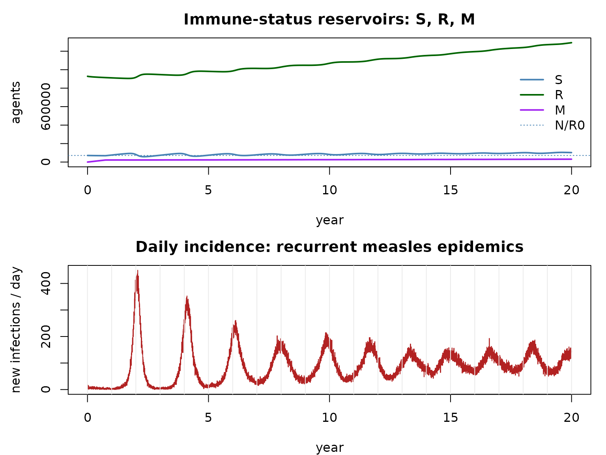

Vital dynamics and maternal immunity: a measles model
Source:vignettes/articles/vital_dynamics_measles.Rmd
vital_dynamics_measles.RmdCompanion to
examples/engwal_measles.R. Builds on the demographics and endemic dynamics notebooks.
Measles: why a richer model
Measles is the canonical childhood infection: very transmissible (–), fully immunizing, and — crucially — sustained by the birth of new susceptibles. Modelling it well needs more than SIR:
- M — maternal immunity: newborns are temporarily protected by maternal antibodies, then wane to S after ~9 months. So the disease chain is M → S → E → I → R.
- vital dynamics: a crude birth rate feeds newborns into M, and every agent has a realistic age and a date of death so natural mortality retires it on schedule.
The susceptible supply (births) makes the system endemic, with the damped/forced recurrent epidemics familiar from pre-vaccination measles.
How razer assembles it
This is where razer’s extensibility pays off — no kernel changes,
just run_model() knobs:
-
extra_states = "M"registers the maternal state. The disease kernels lead with the M→S waning leg, sorun_modelapplies it for us each tick (recording thewaning_mflow). -
capacity(fromcalc_capacity()) reserves slots for the population to grow into over the 20-year run; thebirthskernel activates them. - an
initcallback gives each agent an age (from a pyramid-like curve) and a Kaplan–Meier date of death (see the demographics notebook). - a
step_exitcallback runsbirths(newborns into M, with a maternal timer + a KM date of death) andmortality(retire agents whosedodhas arrived) each tick.
# A survivorship curve l(a) from a Gompertz–Makeham hazard; its complement (cumulative
# deaths) is the life table, and l(a) itself is the initial age distribution. Deriving both
# from one curve keeps the age structure and mortality mutually consistent.
max_age <- 100L; ay <- 0:max_age
haz <- pmin(0.0004 + 1e-5 * exp(0.115 * ay), 1); haz[1] <- 0.02
surv <- numeric(max_age + 2L); surv[1] <- 1
for (a in seq_len(max_age + 1L)) surv[a + 1L] <- surv[a] * (1 - haz[a])
surv[max_age + 2L] <- 0
cohort <- 1e6
age_dist <- aliased_distribution(round(surv[1:(max_age + 1L)] * cohort)) # initial ages
km <- kaplan_meier_estimator(round((surv[1] - surv[2:(max_age + 2L)]) * cohort)) # life table
r0 <- 14; cbr <- 30; nticks <- 20L * 365L; pop <- 1000000L
inf_dur <- dist_normal(7, 1.5); inc_dur <- dist_normal(7, 1.5) # infectious / latent (days)
mat_dur <- dist_normal(270, 20) # maternal-immunity waning (~9 mo)
capacity <- as.integer(calc_capacity(matrix(cbr, nticks - 1L, 1L), pop, safety_factor = 1))
# Seed near the herd-immunity threshold: immune fraction 1 - 1/R0, a small infectious spark.
scenario <- data.frame(population = pop, R = round((1 - 1 / r0) * pop), I = 100L)
m <- run_model(scenario, "SEIR", nticks = nticks, r0 = r0, infectious_period = inf_dur,
incubation_period = inc_dur, capacity = capacity, extra_states = "M",
seed = 1L, progress = FALSE,
init = function(model) {
cap <- model$people$capacity
model$people$dob <- allocate_scalar("i32", cap)
model$people$dod <- allocate_scalar("u32", cap)
model$nodes$birth_rate <- values_map(cbr / 1000 / 365, nticks, 1L)
model$nodes$births <- allocate_vector("i32", nticks - 1L, 1L)
model$nodes$deaths <- allocate_vector("i32", nticks - 1L, 1L)
age_days <- age_dist$sample_n(pop) * 365L + as.integer(floor(stats::runif(pop) * 365))
model$people$dob$set(c(-age_days, integer(cap - pop)))
model$people$dod$set(c(as.integer(km$predict_age_at_death(age_days, -1L) - age_days),
integer(cap - pop)))
},
step_exit = function(model) {
t <- model$tick
b <- births(model$people$state, model$people$timer, model$people$nodeid,
model$people$dob, model$people$dod, model$people$count, 1L,
model$nodes$birth_rate, mat_dur, km, t)
model$people$count <- b$count
move_count(NULL, model$nodes$M, b$born, t); model$nodes$births$set_col(t, b$born)
d <- mortality(model$people$state, model$people$dod, model$people$nodeid,
model$people$count, 1L, t)
move_count(model$nodes$M, NULL, d$m, t); move_count(model$nodes$S, NULL, d$s, t)
move_count(model$nodes$E, NULL, d$e, t); move_count(model$nodes$I, NULL, d$i, t)
move_count(model$nodes$R, NULL, d$r, t); model$nodes$deaths$set_col(t, d$m+d$s+d$e+d$i+d$r)
})
cat(sprintf("living %s -> %s over 20 yr; cases %s; births %s; deaths %s\n",
format(pop, big.mark = ","),
format(round(sum(sapply(c("M","S","E","I","R"), function(s) m$nodes[[s]]$values()[nticks, ]))), big.mark = ","),
format(sum(m$nodes$incidence$values()), big.mark = ","),
format(sum(m$nodes$births$values()), big.mark = ","),
format(sum(m$nodes$deaths$values()), big.mark = ",")))## living 1,000,000 -> 1,430,070 over 20 yr; cases 641,290; births 715,584; deaths 285,514
yr <- (seq_len(nticks) - 1L) / 365
S <- rowSums(m$nodes$S$values()); R <- rowSums(m$nodes$R$values()); M <- rowSums(m$nodes$M$values())
par(mfrow = c(2, 1), mar = c(4, 4.5, 2.5, 1))
matplot(yr, cbind(S, R, M), type = "l", lty = 1, lwd = 2, col = c("steelblue", "darkgreen", "purple"),
xlab = "year", ylab = "agents", main = "Immune-status reservoirs: S, R, M")
abline(h = pop / r0, lty = 3, col = "steelblue") # S* = N / R0
legend("right", c("S", "R", "M", "N/R0"), col = c("steelblue", "darkgreen", "purple", "steelblue"),
lwd = c(2, 2, 2, 1), lty = c(1, 1, 1, 3), bty = "n")
plot(yr[-1], rowSums(m$nodes$incidence$values()), type = "l", col = "firebrick",
xlab = "year", ylab = "new infections / day", main = "Daily incidence: recurrent measles epidemics")
abline(v = 0:20, col = "grey92")
Susceptibles hover near the herd-immunity threshold
(the small 1/14 ≈ 7% reservoir that births top up),
M is a thin layer of protected newborns, and incidence
breaks into recurrent epidemics as the birth-fed
susceptible pool repeatedly crosses threshold.
Customize and extend
-
Vaccination. Layer an SIA campaign on top —
register
c("M", "V")and add a campaign callback (see the interventions notebook); watch the inter-epidemic period lengthen as coverage rises. -
Transmissibility / demography. Change
r0,cbr, or the maternal/latent/infectious distributions; higher birth rates shorten the inter-epidemic period (faster susceptible replenishment). -
Spatial measles. Give
scenariomultiple patches and anetwork(spatial notebook) to study the classic city-size / fade-out-and-rescue measles dynamics. -
Memory for long runs. Over decades the array fills
with the dead; reclaim them with
squash()and size withcalc_capacity_cdr()instead ofcalc_capacity()— the long-runs notebook.